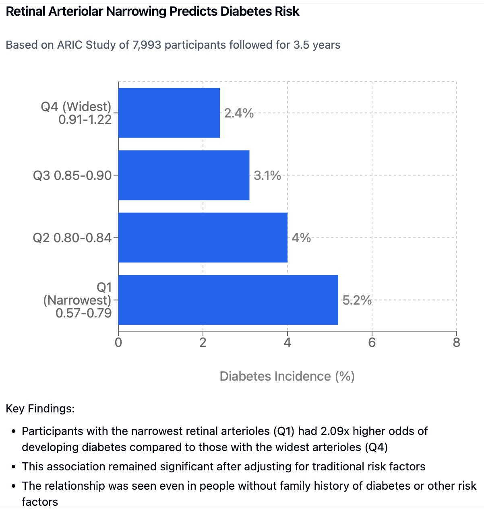
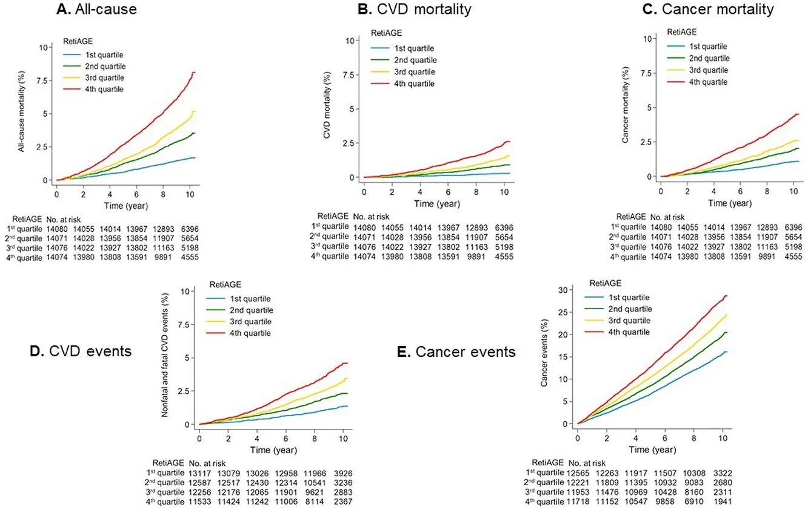

2 科学基础：证据揭示了什么
在第一章中，我们探讨了视网膜如何成为人类健康的一个非凡窗口。我们讨论了它独特的解剖和生理特性，它与大脑的联系，以及通过传统眼底摄影可见的各种眼部病理学。本章迈出了下一步——探讨人工智能如何将视网膜成像从专业诊断工具转变为全面健康评估的强大平台。
几十年来，视网膜评估受到人类感知能力的限制。即使是受过高度训练的眼科医生也受到人眼能辨别和人脑能处理的内容的限制。微妙的血管变化、微小的组织变化和复杂的模式关系往往保持不可见或无法识别。人工智能的引入从根本上改变了这一范式。
传统诊断依赖于识别已知的病理特征——青光眼的扩大视杯或糖尿病视网膜病变的独特渗出物——而AI系统可以检测到没有既定视觉相关性的统计模式和关系。这些系统不仅看得不同；它们看得更多，同时分析成千上万的参数并识别人类观察者看不见的相关性。
这种转变反映了医疗诊断的更广泛演变——从对已建立疾病的被动识别到对健康轨迹和风险因素的主动识别。我们将在本章探讨的证据表明，AI驱动的视网膜分析超越了传统诊断，迈向一种比以往更易获取、更全面、更具预测性的新型健康评估模式。
2.1 人工智能：突破性的推动者
视网膜成像的真正力量通过先进人工智能的应用而显现。虽然人类专家可以识别明显的视网膜病理，但AI系统可以检测人眼无法看见的微妙模式和相关性。
深度学习架构
现代视网膜分析系统采用深度学习网络——受人脑神经结构启发的复杂AI架构。这些网络包含多个处理层，逐步从原始图像数据中提取更高级别的特征。
在训练过程中，这些网络通过分析与已知健康结果配对的数百万眼底图像来学习识别模式。该系统逐渐发展出识别视网膜特征与各种健康状况之间微妙关系的能力。这种学习过程远超简单的模式匹配——它使AI能够发现可能从未通过传统研究方法识别的新生物标志物和关系。
深度学习与以前的计算方法的区别在于它能够自动发现相关特征，而无需明确编程。传统图像分析可能需要工程师精确指定要测量的特征（如血管宽度或分支模式）。相比之下，深度学习系统独立确定哪些图像特征对健康评估最相关，通常识别出人类观察者无法识别的过于微妙或复杂的模式。
定量分析能力
AI驱动的视网膜分析可以精确量化人类评估具有挑战性的众多参数：
血管测量：自动测量微米级精度的小动脉和小静脉口径、迂曲度、分支角度和血管壁特征。
结构量化：分析视盘参数（杯盘比、神经视网膜边缘面积）、黄斑区特征和神经纤维层完整性。
纹理分析：评估视网膜背景纹理和反射率的微妙变化，可能表明早期病理变化。
纵向比较：精确追踪随时间变化的情况，允许早期检测进行性疾病并监测治疗反应。
比较分析：将患者发现与大型标准化数据库进行匹配，考虑年龄、性别和种族等因素，提供情境化的健康见解。
这些定量能力将视网膜成像从简单的筛查工具转变为复杂的健康评估平台，能够检测与系统性健康状况相关的微妙变化。
2.2 眼底摄影的优势
虽然这些概念可能很复杂，但通过使用高分辨率眼底摄影，它们变得容易获取。这种专门的成像技术使用具有特定光学和光谱的相机来捕捉视网膜的详细图像，包括视盘、血管和黄斑区（即中央敏锐视力区）。这些照片揭示了在传统眼底检查（使用手持工具查看眼睛）中不容易看到的微妙变化。这些照片还生成视网膜的永久记录，可供人类和AI分析。
通过高分辨率眼底摄影的镜头，AI可以检测到视网膜中一系列变化，表明潜在疾病的存在。这些变化可能与以下方面有关：
- 血管口径：血管（小动脉和小静脉）的直径。狭窄或扩张可能是高血压或炎症的指标。
- 血管迂曲度：血管弯曲或扭曲的程度。异常迂曲的血管可能与年龄或其他疾病过程有关。
- 颜色变化：与血流、氧合或某些色素存在相关的视网膜外观差异。
- 病变存在：如出血、渗出物和玻璃膜疣。
- 视网膜层厚度变化：层厚度变化已被证明与各种系统性疾病相关。
眼底摄影作为工具的力量在于其捕捉这些微妙信号的能力，提供对身体复杂运作的一瞥。它揭示了通过常规体检或血液检查不容易发现的信息。通常，这些微妙的视网膜变化先于更明显的系统性症状，因此可以作为警告系统，允许更早检测和干预。
这也突显了超越疾病明显迹象的重要性。许多个体，特别是那些对健康和预防医学感兴趣的人，可能没有任何疾病的明显症状，被认为是”健康的”。然而，即使疾病尚未在临床上表现出来，亚临床或无症状前期也可能通过视网膜形态的这些微妙变化被检测到。
通过高分辨率眼底摄影研究视网膜，我们不再局限于评估仅与眼睛相关的健康。相反，这项技术允许我们揭开这种独特组织内所持有的秘密。它使我们能够：
- 评估您的血管系统的健康
- 确定您患某些系统性疾病的可能性
- 获取有关您生物年龄的见解
- 识别疾病的潜在早期迹象
这种通过视网膜成像实现的整体观点使我们从纯粹被动的健康方法转向更主动和个性化的护理模式。这是一种承认身体系统相互联系的方法，使个人能够控制自己的健康和福祉。
视网膜，曾经被视为纯粹的视觉器官，现在被认为是一种引人入胜且有价值的组织，可用于评估整体健康。高分辨率眼底摄影和AI的力量使我们能够深入这些秘密，找到关于疾病状态和生物老化的线索，为我们理解、监测和促进健康的方式开辟了新的前沿。虽然研究仍在进行中，但本节概述的基本原则和研究清楚地展示了这种模式彻底改变健康和健康评估的惊人潜力。
2.3 深度学习与人工智能
人眼在分辨极其微妙的模式方面非常出色。然而，即使是最熟练的人眼在快速处理和分析大量复杂信息方面也无法与计算机竞争。这就是深度学习和人工智能（AI）在高分辨率眼底摄影领域成为无价工具的地方。要充分欣赏眼底成像对健康评估的力量，理解AI的作用至关重要。
正如我们在上一章中讨论的，视网膜包含大量关于我们整体健康的信息。然而，识别和解释视网膜图像内的微妙变化可能具有挑战性。这就是传统方法的局限所在；依赖人类解释不仅耗时，而且可能受到读者间和读者内变异性的影响（即，一个人可能在不同场合对同一照片有不同解释，两个人可能对同一照片有不同解释）。通过AI，特别是深度学习，可以克服这些限制。
传统计算机程序通常依赖于”手工制作”的算法。这些算法由人类工程师构建，他们会预先编程程序必须采取的所有步骤，以及应在图像中寻找的特征。深度学习提供了根本性的转变，因为它不是被编程为遵循预定指令。相反，深度学习系统通过大量数据进行训练。例如，与其告诉AI程序如何识别血管，深度学习系统会在数十万张视网膜图像及其相应健康结果上进行训练，学习图像模式和疾病状态之间的微妙而复杂的关系。这个过程使AI能够检测人眼可能错过的模式和特征，使眼底成像的诊断和预测能力更加强大。
深度学习是机器学习（AI的一个子领域）的特定类型，它采用具有多层的人工神经网络（因此称为”深度”）。这些层使AI系统能够通过分层阶段处理信息，类似于大脑中的复杂网络。实际上，AI算法”学习”哪些特征与手头任务相关，并”决定”应用于这些特征的相对权重。一般来说，深度学习模型在数十万（甚至数百万）张视网膜图像上进行训练，这些图像带有相应的地面实况临床诊断和其他健康信息；因此，神经网络中的每一层都学习到越来越抽象和相关的特征，最终使其能够执行像检测青光眼或糖尿病视网膜病变，或预测个人生物年龄这样复杂的任务。
这种”深度”架构的优势在于它使AI模型能够自动从图像中提取更高级别和更微妙的特征。例如，与其被编程为仅分析血管口径或血管迂曲度，AI将自动学习评估这些因素和其他图像特征，然后学习如何相对于健康结果权衡这些因素。这也意味着深度学习能够提取新信息，甚至关于那些对人眼可能无法分辨的潜在因素，这些因素使用标准方法可能已经被忽略。
Opticare已将这一革命性技术整合到AI驱动的眼底相机中，提供最先进的健康评估。Opticare AI系统是一种在数百万标记视网膜图像的庞大数据集上训练的深度学习模型。这种训练使系统能够识别视网膜图像中的微妙模式，并将这些模式与不同健康状态的已知特征进行比较。
当您使用Opticare设备拍摄眼底照片时，图像会立即被训练有素的AI系统分析。该系统不仅仅看视网膜的明显特征；它被训练为评估人眼能看到的一切，以及人眼看不到的东西。其中一些特征如下：
- 血管口径和迂曲度：AI准确测量血管的直径和形状，这可能是心血管风险、糖尿病和其他系统性疾病的指标。
- 层厚度：深度学习模型能够分析不同视网膜层的厚度，以及这些厚度随时间或与健康人群相比的任何变化。层中的微妙差异通常与各种疾病或发展风险相关。
- 病变存在：AI可以自动识别各种异常病变，如玻璃膜疣、出血和渗出物，这些通常是眼病的迹象，也与系统性疾病相关。
- 颜色变化：AI可以检测视网膜颜色的微妙变化，这可能表明与血流和代谢相关的潜在状况。
- 特征的空间组织：深度学习网络可以辨别不同特征如何在空间上组织以及这些模式如何与特定条件相关的模式，超越了单一特征评估。
- 特征组合：AI模型被训练为评估特征组合，就像临床医生那样，以得出最终的诊断或风险评估。这种方法利用了视网膜特征的冗余性，比仅依赖单一特征更稳健。
使用Opticare相机时，您应该记住以下几点：
- 图像捕捉：使用专业相机和照明捕捉视网膜的高分辨率眼底照片。
- 自动分析：这张图像被输入我们的深度学习系统，该系统在训练期间分析超过3000万张视网膜图像。
- 解释和见解：系统提供视网膜作为各种疾病标志的评估，并生成生物年龄预测。您将能够看到清晰简单地显示结果的分数或图表。
- 临床背景：AI的发现应作为当前临床评估的辅助工具，并在特定客户的背景下使用，而不是作为独立的诊断工具。人类专家也应解释发现，以确保最佳水平的护理。
深度学习和AI正在改变我们分析眼底图像的方式。这项技术使您能够快速识别人眼不容易看到的微妙模式。Opticare AI眼底相机利用这一力量，为您提供一种尖端手段，为客户提供全面最先进的健康评估。通过弥合视网膜数据复杂性与可轻松解释的结果之间的差距，Opticare为您的健康实践带来了新水平的清晰度、洞察力和价值。
2.4 早期糖尿病检测的强大工具
糖尿病，特别是2型糖尿病，代表着我们时代最重要的全球健康挑战之一，影响着全球数亿人。其影响远超葡萄糖代谢，影响身体几乎每个器官系统，包括眼睛。视网膜，凭借其独特且易于观察的微血管系统，提供了一个非凡的非侵入性窗口，可以观察糖尿病的存在和潜在发展。现代高分辨率眼底摄影，结合人工智能（AI），正在彻底改变糖尿病检测，实现更早识别并可能改善患者结果。
糖尿病视网膜在其他症状出现之前就讲述了一个故事。在全面糖尿病发作之前，视网膜中会发生微妙变化，通常与高血糖对微血管系统的影响有关。这些早期变化通常先于明显症状，使它们对早期检测非常宝贵。最早的迹象包括血管狭窄，高血糖损害视网膜小动脉的精细壁，减少其直径和血流量。当血管壁受损时，它们可能会泄漏液体和血液成分到视网膜组织中，导致轻微肿胀或小点状出血和渗出物的出现。微动脉瘤作为微小红点出现，表明血管壁损伤，而血管颜色的变化反映了血流和氧合的变化。此外，研究表明视网膜层厚度的微妙变化，特别是在神经节细胞层和内丛状层，与早期糖尿病视网膜病变相关。
传统糖尿病筛查方法通常是侵入性的、耗时的和昂贵的。患者通常需要进行空腹血糖测试、糖化血红蛋白测量或口服葡萄糖耐量测试，这需要专门设备、人员和抽血。眼底摄影提供了一个引人注目的替代方案：便捷、安全且非侵入性。
AI的整合极大地增强了眼底成像对糖尿病检测的能力。虽然眼底照片提供了关键的视觉信息，但与早期糖尿病相关的微妙迹象可能对人类解释构成挑战。在数百万标记眼底图像上训练的深度学习算法，可以识别即使经验丰富的从业者也可能错过的复杂模式。这些算法擅长量化微妙变化，测量视网膜血管直径，并以显著精度检测视网膜层中的微小变化。通过复杂的模式识别，AI可以识别视网膜血管分支或玻璃膜疣特征中特定配置，表明疾病风险或状态。
2002年发表在JAMA上的一项开创性研究1为眼底成像在糖尿病检测中的潜力提供了重要早期证据。该研究题为”视网膜小动脉狭窄和中年人糖尿病风险”，建立了视网膜微血管变化与糖尿病风险之间的关键联系。研究人员分析了动脉粥样硬化社区风险研究的数据，追踪了7,993名基线时无糖尿病的中年参与者。通过测量视网膜小动脉和小静脉的直径计算小动脉与小静脉比率（AVR），他们证明小动脉较窄的参与者在3.5年随访期间发展糖尿病的风险显著增加。AVR比率最低四分位数的人比最高四分位数的人风险高71%，即使在调整了传统风险因素后也是如此。

对于现代临床实践，这些发现突显了眼底摄影作为早期和整体健康评估的强大工具的潜力。在传统诊断测试显示异常之前揭示视网膜微血管早期变化的能力使及时干预和生活方式修改成为可能。其非侵入性使其对可能对传统医疗程序犹豫的患者特别易于接受和吸引人。该技术无缝集成到更广泛的健康和健康评估中，不仅提供有关眼部健康的见解，还提供有关系统性疾病的信息。作为监测工具，连续视网膜图像可以随时间追踪糖尿病的进展和治疗效果，实现更有针对性和有效的护理。
视网膜健康与糖尿病之间的联系现已确立，高分辨率眼底摄影代表了通过早期检测、增强监测和更全面的健康视角改善患者结果的显著机会。AI的整合使这项技术的获取民主化，使复杂分析可供广泛的从业者使用。这种方法在预防和健康护理中特别出色，为提供者和患者提供有价值的见解，同时使个人能够主动控制他们的健康之旅。
2.5 其他眼部病理学
青光眼，另一种与各种系统因素相关的常见眼部疾病，也可以通过应用于眼底照片的AI算法识别2。这些发现可能具有临床影响，因为青光眼是失明的常见原因，并可能早期筛查和治疗。除此之外，一些研究人员已经探索了甲状腺疾病与视网膜眼底图像之间的联系，并发现了有希望的诊断应用，尽管需要进一步工作。
高血压视网膜病变（HPR）在眼底图像中表现出AI系统现在可以可靠检测的独特模式。研究表明，HPR变化的严重程度与系统性血压水平之间存在强烈相关性。先进的图像分析可以量化与HPR相关的小动脉狭窄、动静脉交叉变化和其他特征变化，提供有关心血管健康风险的有价值信息。
视盘玻璃膜疣，虽然通常被视为良性发现，有时可能与更严重的情况如视盘水肿混淆。AI驱动的分析通过检查视盘外观的特定特征帮助区分这些情况。研究表明，机器学习算法在区分玻璃膜疣与其他视盘异常方面能够达到高精度，有助于指导适当的临床管理。
AI分析对年龄相关性黄斑变性（AMD）的检测已显著增强。深度学习系统现在可以识别AMD的早期迹象，包括微妙的玻璃膜疣形成和色素变化，在它们在临床上变得明显之前。这种早期检测能力对于实施预防措施和减缓疾病进展至关重要。
分支视网膜静脉阻塞（BRVO）和中央视网膜静脉阻塞（CRVO）在眼底图像中呈现AI系统现在可以高度可靠地识别的独特模式。最近的研究表明，深度学习算法能够早期检测这些情况，可能使更快干预和更好的结果成为可能。
图像分析的最新进展也改善了视网膜动脉阻塞的检测。AI系统现在可以识别血管口径和灌注模式的微妙变化，这可能表明即将发生阻塞事件。这种能力可以帮助识别这些威胁视力的情况风险的患者，在它们在临床上变得明显之前。
通过眼底成像检测视神经炎也从AI分析中受益。机器学习算法可以识别视盘外观和视乳头周围视网膜神经纤维层的微妙变化，这可能表明炎症或脱髓鞘过程。这种能力对于监测多发性硬化等疾病特别相关。
2.6 视网膜成像与心血管健康
人眼越来越显示为一面反映循环系统整体健康的复杂镜子。在视网膜内，一个精细的血管网络——小动脉和小静脉——提供了一个独特的、非侵入性的机会来观察系统性血管健康。这些微血管，通过非散瞳眼底摄影容易看到，会经历微妙但显著的变化，这些变化与发展缺血性心血管疾病（ICVD）风险增加相关。这些变化，包括但不限于小动脉直径变化、小静脉扩张和微血管损伤的存在，都表明身体更广泛血管系统的潜在功能障碍。在本节中，我们将探讨将视网膜微血管与ICVD联系起来的不断增长的证据。
评估心血管健康的传统方法，如血液检测、血压测量和问卷调查，提供了基本但有时不完整的风险图景。这些测试通常需要侵入性程序和/或复杂解释，并且可能难以在社区或初级保健环境中大规模部署。此外，CVD的风险评估仍然受到依赖传统风险因素的限制，因为许多没有这些风险因素的患者仍然发展心脏病。视网膜成像，特别是当与先进图像分析和人工智能（AI）结合时，为更直接和易于获取的人血管健康评估提供了一种新颖的、非侵入性途径，以及可以轻松部署在广泛临床和社区环境中的工具。研究的一个最引人注目的领域是开发能够从视网膜图像预测ICVD风险的AI驱动方法，这些方法在几个大型人口研究中显示了显著性能。
发表在《科学通报3中的一项研究详细介绍了中国研究人员如何利用超过390,000张视网膜图像的庞大数据集训练深度学习算法进行ICVD风险分层。这项研究基于非散瞳眼底图像，使其易于在大多数临床环境中收集。该算法旨在通过学习识别眼底图像中可能对肉眼不明显的模式来估计患者10年内ICVD事件的风险，如微血管的微妙变化。该模型在内部和外部验证数据集中都表现异常好，展示了在不同人群中的稳健性和通用性。该模型在内部数据集上实现了令人印象深刻的调整R²为0.876，在外部验证集（北京衰老和血管研究（BRAVE）数据集）上为0.638。调整后的R2代表了这个模型可以解释的变异性比例。R2为1表示模型完美预测结果，没有方差，而0代表模型没有预测结果的能力。这些结果表明，AI驱动的视网膜成像评估具有高潜力估计ICVD风险。
此外，当使用训练过的算法分类ICVD风险时，该模型在检测10年ICVD风险≥5%的患者方面显示了非常高的受试者操作特征曲线下面积（AUC）。在内部验证数据集中，AUC为0.971（95%置信区间：0.967-0.975），在外部验证中为0.859（95%置信区间：0.822-0.895）。对于更高的ICVD风险阈值（≥7.5%），内部验证数据集的AUC为0.976（95%置信区间：0.973-0.980），外部数据为0.876（95%置信区间：0.816-0.937）。接近1的AUC值表示完美的诊断准确性。这些AUC值展示了该算法的高预测能力，这与其他研究也看到基于眼底图像的AI算法具有高预测能力一致。结果表明，该算法可能是评估ICVD风险的既定方法的可行且准确的替代方案，这可能导致视网膜成像在常规检查中的广泛实施。这些发现还表明，AI算法能够学习微血管变化与ICVD的关联，包括小静脉扩张和小动脉狭窄。AI可以从图像中提取微妙的关系，这些关系虽然难以用肉眼欣赏，但可以预测健康结果。这些微妙的变化也与其他传统风险因素一致，如血压。
研究作者指出了一些限制。首先，数据是横断面收集的，其结果是从使用传统风险因素的估计工具预测的，而不是实际的纵向ICVD事件数据。为了确认预测能力，计划对BRAVE数据进行跟踪研究。其次，数据集中缺少吸烟状态。尽管有这些限制，这些发现仍然提供了令人信服的证据，证明AI在使用视网膜图像进行ICVD风险评估方面的潜力，考虑到方法的简单性和高度的预测能力。
2.7 大脑和认知健康
视网膜在发育过程中是大脑的胚胎延伸，因此与大脑共享密切的生理和解剖关系4。它是一种不寻常的组织，可以非侵入性地观察，允许轻松检查微血管功能。正是因为这一点，科学家们正在探索视网膜成像在理解脑血管和神经退行性疾病（如痴呆症）方面的潜在作用。视网膜图像提供了一种监测大脑健康的新方法。
越来越多的研究建立了视网膜血管变化与痴呆风险增加之间的相关性。研究表明，具有视网膜微血管异常（包括小动脉狭窄、小静脉扩张和视网膜病变的存在）的个体更可能发展认知下降和痴呆(Hua 等 2022)。这种联系植根于视网膜和脑微血管的相似性。两种血管系统共享类似的结构和生理功能，一种变化可能反映另一种中类似的病理变化。这种关系的含义很重要，因为脑血管疾病被认为是痴呆的主要贡献者。与单独依靠传统认知测试不同，视网膜成像可用于全人群筛查，识别高风险患者并允许更早干预。
在一项创新研5中，研究人员开发了一种利用眼底照片估计心血管风险因素、衰老和痴呆发病率（CAIDE）痴呆风险评分的新算法。CAIDE是一种成熟的工具，使用多维风险因素（年龄、性别、教育水平、身体不活动、收缩压、总胆固醇和体重指数）预测20年痴呆风险。研究表明，该算法与实际评分相比，预测CAIDE风险评分具有高调整R2（内部验证为0.80，外部验证为0.58），表明该算法能够从视网膜照片中提取相关数据。此外，该算法的外部验证显示具有高接收者操作特征曲线下面积（AUC）0.926（95%置信区间：0.913-0.939），表明能够强力区分具有高痴呆风险的个体。这种预测能力非常令人印象深刻，因为CAIDE评分也已经在大型多种族人群中显示预测性。这项研究超越了简单相关，展示了AI驱动的视网膜图像分析可以预测与痴呆风险相关的复杂指标，表明非侵入性早期检测和风险分层的路径。
中国的一项类似研究6使用了来自19个地区271,864名参与者的眼底照片，在20,690名参与者上进行外部验证。该算法使用相同的CAIDE风险评分识别高痴呆风险方面显示出显著准确性，在内部验证中达到AUC 0.944，在外部验证中达到0.926。
该算法在估计和实际CAIDE评分之间显示出强相关性，特别是在内部验证组（R²= 0.80）。重要的是，较高的估计风险评分与多个领域的认知表现较差显著相关，确认了预测的临床相关性。
重要的是指出，该研究是横断面而非纵向的，在外部验证中显示较低相关性（R²= 0.58），并且仅限于中国人群。此外，开发数据集缺乏可能改善预测的完整生活方式数据。
尽管有这些限制，这代表了在系统健康筛查中使用视网膜成像的重大进步。在不同人口统计群体和风险阈值之间的强表现表明，这项技术可以帮助识别早期干预和临床试验招募的风险个体，尽管进一步验证与纵向结果数据将是有价值的。
进一步支持视网膜和大脑之间这种联系的是检查环境因素对视网膜结构影响的工作。伦敦大学学院的研究人员分析了英国生物库数据集，确定暴露于环境空气污染可能与视网膜层厚度变化有关7。他们发现，增加暴露于细颗粒物质（PM2.5）和氮氧化物与视网膜神经纤维层（RNFL）增厚和神经节细胞-内丛状层（GCIPL）变薄相关。此外，更高水平的PM2.5吸收与RNFL、内核层和OPL+ONL变薄相关。这些发现不仅表明环境毒素对视网膜结构的影响，还暗示这些相同的毒素也可能在其他区域，包括大脑中引起类似变化。
总的来说，这些调查表明，基于AI的视网膜图像分析潜在可以提供早期、非侵入性的大脑健康指标，提供一个窗口了解可能先于神经退行性疾病如痴呆症的病理过程。
2.8 视网膜成像与贫血
除了作为血管和神经健康的窗口之外，视网膜还提供了一个非侵入性评估贫血等血液学状况的独特机会。贫血，以红细胞或血红蛋白缺乏为特征，影响全球估计16亿个人，在诊断和管理方面面临重大挑战{[}1,2{]}。由于需要血液样本的诊断测试的侵入性和成本，这种情况常常未被诊断，特别是在资源有限的环境中。然而，AI的最新进展，特别是当应用于视网膜眼底照片时，为这种重要状况的非侵入性检测和管理提供了一个有希望的替代方案。
研究人员已经证明，AI算法可以仅使用眼底照片准确量化血红蛋白（Hb）水平并检测贫血的存在。在一项发表在《自然生物医学工程》8的大规模研究中，一组科学家使用英国生物库的眼底图像开发了深度学习模型，使用眼底照片、参与者元数据或两者结合来检测贫血。他们发现，眼底图像与元数据的组合模型最为准确，研究使用了11,388名研究参与者的验证集。组合模型的结果显示，预测Hb浓度的平均绝对误差（MAE）为0.63 g/dL（95%置信区间，0.62-0.64），贫血检测的AUC为0.88（95%置信区间，0.86-0.89），任何贫血检测的ROC曲线下面积为0.88（95%置信区间0.86-0.89），中度至重度贫血的ROC曲线下面积为0.95（95%置信区间，0.93-0.97）。MAE 0.63 g/dl接近实验室测量的0.14 g/dl（参考）精度，比非侵入性即时护理设备的精度1.1至1.2 g/dl要高得多。这些结果令人震惊，因为这些结果完全基于非侵入性测量。眼底照片捕捉了与低血红蛋白相关的微妙变化，包括视网膜苍白和静脉迂曲度。这些发现不仅强调了深度学习在处理复杂图像数据方面的能力，还显示了非侵入性诊断贫血方法的明确路径。
此外，研究还发现，该算法可以在539名自报糖尿病的参与者中检测贫血，性能相当。研究的MAE略大，为0.73 g/dl（95%置信区间，0.68-0.78 g/dl），AUC为0.89（95%置信区间，0.85-0.93），相比于研究中的所有参与者。这些结果特别相关，因为贫血经常与糖尿病相关（高达23%的糖尿病患者仍未被诊断出贫血）并且已经显示增加这些人群的发病率和死亡率。鉴于糖尿病视网膜病变的常规视网膜筛查的潜力，AI从视网膜照片中检测贫血的能力可能非常有用，并提供额外的健康筛查机会。
2.9 瞳孔大小和智能
基线瞳孔大小和认知能力之间存在一种有趣的相关性，进一步支持眼睛作为大脑功能窗口的作用。在佐治亚理工学院进行的研9表明，基线瞳孔较大的个体倾向于在流体智力、注意力控制和工作记忆容量测试中得分更高。这种关系足够稳健，以至于高低认知表现者之间的差异可以用肉眼检测到。
这种联系的生理基础在于蓝斑，这是上脑干中的一个核，调节瞳孔大小并在整个大脑释放去甲肾上腺素。这种神经递质在感知、注意力、学习和记忆中起着关键作用。更重要的是，它有助于维持跨远距离区域的有组织大脑活动——这一功能对复杂认知任务至关重要。
研究团队使用高精度眼动追踪技术，在受控照明条件下测量参与者执行各种认知评估时的瞳孔大小。瞳孔直径通常范围为二至八毫米，与流体智力测试和注意力控制任务的表现显示一致正相关。一项特别揭示性的测试要求参与者抵抗观看闪烁刺激，而是专注于识别短暂显示的字母——这是一项需要精密注意力控制的任务。
瞳孔大小和认知功能之间的这种联系似乎是年龄依赖性的，年长参与者通常显示更收缩的瞳孔。然而，当按年龄调整时，瞳孔大小和认知能力之间的关系仍然显著。这一发现表明通过精确瞳孔测量进行非侵入性认知评估的潜在应用。
一种假设认为，较大的基线瞳孔大小表明蓝斑的强化调节，可能反映更有效的大脑组织。这可能解释与更高认知表现的相关性。值得注意的是，蓝斑功能障碍已被牵连到阿尔茨海默病和ADHD等状况，表明仔细瞳孔测量在认知健康评估中的潜在诊断应用。
这项研究诠释了看似简单的生理测量如何提供复杂大脑功能的窗口。虽然需要更多研究来充分理解这些关系，但这些发现强化了全面眼部评估在健康评估中的价值。对于使用先进成像技术的从业者来说，意识到这些相关性可以增强他们对眼睛作为整体健康和认知功能生物标志物作用的理解。
2.10 预测年龄和死亡风险
虽然传统智慧可能将视网膜仅与视觉功能联系起来，但研究越来越表明，眼睛还提供了观察衰老过程和量化死亡风险的窗口。视网膜，由神经组织和血管组成，反映了受年龄影响的局部变化以及衰老对人体更广泛的系统性影响。研究人员发现，通过眼底摄影可以识别视网膜与年龄相关的微妙变化，并使用AI进行量化，创建一个生物年龄和其与死亡风险联系的新型生物标志物。
新加坡的一组研究人员开发了一种算法，可以根据眼底图像的深度学习估计患者的生物年龄，称为RetiAG10。该算法最初在40,480名韩国成人的眼底照片上训练，然后使用英国生物库的56,301名参与者进行评估，这证明了其在不同人群和种族之间的通用性。他们发现，使用年龄大于或等于65岁的截止点，该算法显示AUC为0.76，AUPRC为0.399。更重要的是，他们然后按RetiAGE对参与者进行分层，并追踪他们超过10年，发现RetiAGE第四四分位数的个体与最低四分位数相比，全因死亡风险增加67%，CVD相关死亡风险增加142%，癌症相关死亡风险增加60%。关键的是，这些关联独立于年龄和一些既定的衰老生物标志物，包括白蛋白、肌酐、葡萄糖和C反应蛋白。这些数据表明，该算法捕捉了一些传统生物标志物无法识别的与衰老相关的生物变化。在这项研究中，研究人员还表明，RetiAGE的添加增加了预测死亡风险的能力，超越了传统风险因素。

类似地，另一项基于英国生物库眼底图像10年纵向分析的研究发现，视网膜年龄差距（预测年龄与实际年龄之间的差异）与全因死亡风险增加2%和非CVD/非癌症死亡风险增加3%相关11。虽然他们没有发现视网膜年龄差距与CVD或癌症相关死亡率之间的显著关联，但他们的发现强调了视网膜变化在更广泛衰老过程中的作用。上述两项研究都具有强烈的统计显著性，有大型人群和严格的方法，从而支持视网膜眼底成像可能提供确定生物年龄和死亡风险的非侵入性方法的假设。
虽然与年龄和死亡率相关的观察到的视网膜变化背后的生物机制仍然是未来研究的主题，但越来越明显的是，AI驱动的视网膜图像分析可以提供生物衰老和长期健康结果的新型标记，展示作为在各种不同环境中评估死亡风险的工具的显著潜力。
2.11 超越主要焦点
支持使用眼底摄影进行一般健康评估的证据库继续增长12，超越心血管、神经和血液学状况。AI正在证明是一种多功能工具，其分析视网膜图像复杂性的能力正在扩大我们对视网膜及其与一系列系统性疾病联系的理解。
例如，研究表明通过视网膜分析评估肝功能的潜在应用。视网膜的独特血管模式可能反映与肝脏状况相关的微妙变化，因为两个器官共享类似的微血管特征和调节机制。早期研究表明，特定视网膜血管模式可能与肝酶水平和功能相关，尽管需要更多研究来验证这些发现。
新兴证据还指向免疫学评估的潜在应用。视网膜的免疫特权状态及其与系统免疫的复杂关系使其成为监测免疫系统功能的有趣目标。视网膜血管和组织特征的变化可能提供自身免疫状况或免疫系统功能障碍的早期指标。
激素平衡可能是视网膜成像可能提供见解的另一个领域。视网膜包含众多激素受体，初步研究表明激素波动可能影响视网膜血管特征。这可能为内分泌系统功能提供非侵入性窗口，尽管仍需进行大量验证工作。
研究人员还在探索视网膜模式与胃肠道健康之间的联系。肠-脑轴，越来越显示影响健康各个方面，可能在视网膜组织中表现出可观察到的变化。一些研究表明，炎症性肠病可能反映在视网膜血管模式中，尽管这些发现仍处于初步阶段。
视网膜成像评估线粒体功能的潜力代表了另一个令人兴奋的前沿。鉴于视网膜的高代谢需求和密集线粒体网络，视网膜组织特征的变化可能反映系统线粒体健康。这可能对理解能量代谢和与年龄相关的状况有影响。
随着分析能力的进步，研究人员正在调查视网膜特征与微生物组健康之间的潜在相关性。虽然这种联系乍看起来似乎不太可能，但新兴研究表明，肠道微生物组成可能通过系统炎症途径影响视网膜健康。
时间生物学领域也可能从先进视网膜分析中受益。视网膜在昼夜节律调节中的作用表明，详细成像可能提供关于昼夜节律扰乱及其系统性影响的见解。这可能对睡眠医学和代谢健康评估产生影响。
这些新兴研究领域强调了视网膜成像应用的持续演变。随着AI系统分析更大数据集并识别新模式，我们可能会发现视网膜特征与健康各个方面之间的其他相关性。然而，在探索这些新可能性时，保持科学严谨性很重要。
未来可能会揭示视网膜健康与系统性疾病之间更多意想不到的联系。随着我们对身体相互连接系统理解的加深，视网膜作为整体健康窗口的角色可能会扩大。这强调了在评估视网膜成像技术的新应用时，保持开放但批判性思维的重要性。
这一持续研究强化了将视网膜成像纳入全面健康评估的价值。虽然一些应用仍然是推测性的，但不断增长的证据表明，眼底摄影将继续揭示关于人类健康和疾病过程的新见解。
这些发展仅仅代表着先进视网膜成像可能实现的开端。随着技术继续演变和我们理解的加深，我们可以期待发现额外的应用，进一步增强这种非侵入性评估工具在健康实践中的价值。